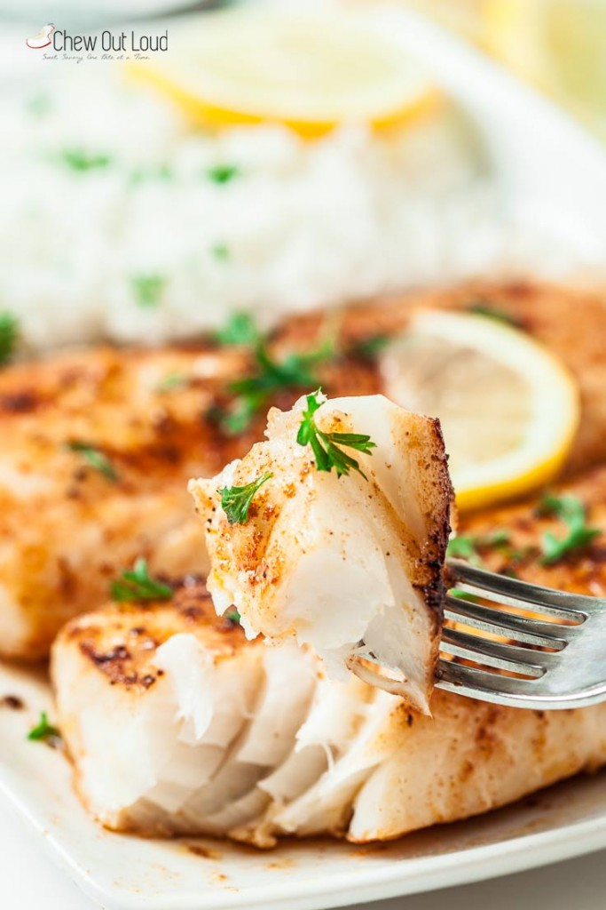

| Prep Time |
Cook Time |
Total Time |
| 20 minutes |
50 minutes |
1 hr 10 mins |
Fish Recipe
Ingredients
- 4 good-sized firm white fish fillets, about 6 inches long, 1-inch thickness (cod, halibut, or mahi would work well.)
- 3 TB melted butter (I use salted, but unsalted is fine)
- Juice and zest from 1 medium lemon
- 1/2 tsp kosher salt, plus extra to taste
- 1 tsp paprika
- 1 tsp garlic powder
- 1 tsp onion powder
- 1/4 tsp freshly ground black pepper
- 3 TB olive oil
- freshly chopped basil or parsley leaves, for garnish and flavor
- extra lemon slices for serving
Instructions
- Use paper towels to thoroughly pat-dry excess moisture from fish fillets – this step is crucial for fish to brown nicely in pan. Set aside.
- In a bowl, combine melted butter, lemon juice and zest, and 1/2 tsp kosher salt. Stir to combine well. Taste and add a bit more kosher salt, if desired.
- In a separate bowl, combine the remaining 1/2 tsp kosher salt, paprika, garlic powder, onion powder, and black pepper. Evenly press spice mixture onto all sides of fish fillets.
- In a large, heavy pan over medium high heat, heat up the olive oil until hot. Once your oil is sizzling, Cook 2 fish fillets at a time to avoid overcrowding (allows for even browning.) Cook each side just until fish becomes opaque, feels somewhat
firm in the center, and is browned – lightly drizzle some of the lemon butter sauce as you cook, reserving the rest for serving. Take care not to over-cook, as that will result in a tougher texture. Season with extra kosher salt and freshly
ground black pepper to taste.
- Serve fish with with remaining lemon butter sauce, basil or parsley, and lemon wedges.